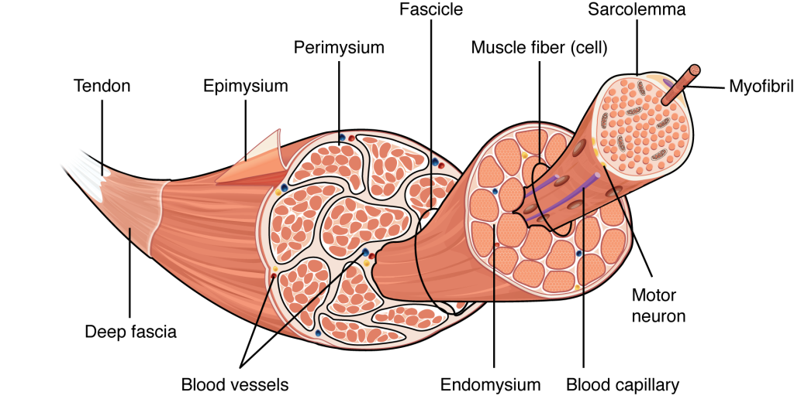

Experiment 5: Microscopic Study of Muscular and Nervous Tissue
AIM
Microscopic study of muscular and nervous tissue.Requirements
- Permanent slides- Compound microscope
References
Inderbir S. Textbook of Human Histology with Colour Atlas. 6th edition. New Delhi: Jaypee Brothers Medical Publishers; 2011Introduction
Muscle tissue is one of the four fundamental tissue types of the human body. It is associated with nerves, blood vessels, and various connective tissues. Muscles are complex structures and are a marvel of both biology and physics. General Characteristics of Muscle Tissue
- Excitability – Ability to receive and respond to stimuli.
- Skeletal muscle: Stimulus is a neurotransmitter from a neuron.
- Smooth muscle: Stimulus can be a neurotransmitter, hormone, or stretch.
- Cardiac muscle: Stimulus may be a neurotransmitter, hormone, or stretch.
- Response: Generation of an electrical impulse along the plasma membrane.
- Contractility – Ability to contract forcibly when stimulated. This is the defining property of muscle tissue.
- Extensibility – Ability to be stretched or extended.
- Elasticity – Ability to recoil and return to original length after stretching.

Functions of Muscle Tissue
- Movement
- Locomotion
- Maintenance of posture
- Heat production
- Facial expressions
- Pumping blood
- Peristalsis (movement of substances through internal organs)

Types of Muscle Tissue
Skeletal Muscle
- Description: Long, striated cells with multiple nuclei
- Function: Voluntary movement
- Location: Attached to bones
Smooth Muscle
- Description: Long, spindle-shaped cells with a single nucleus
- Function: Propels substances along internal passageways
- Location: Walls of hollow organs (e.g., stomach, intestines, blood vessels)
Cardiac Muscle
- Description: Branching, striated cells fused at plasma membrane
- Function: Pumps blood
- Location: Wall of the heart
Nervous Tissue
Nervous tissue is the most complex tissue in the human body. It consists of over 100 million nerve cells supported by glial cells. Each neuron connects with thousands of others, forming a highly intricate system.

Functions of Nervous Tissue
- Regulates and controls body functions
- Generates and transmits nerve impulses
- Supports, insulates, and protects neurons
Composition of Nervous Tissue
- Neurons
- Description: Branching cells with long processes extending from the cell body
- Function: Transmit electrical signals from sensory receptors to effectors
- Location: Brain, spinal cord, and nerves
- Neuroglia – Support cells that assist neurons